| Depressive Symptoms | |||
|---|---|---|---|
| Predictors | Estimates | CI | p |
| (Intercept) | 1.76 | 0.40 – 3.13 | 0.011 |
| Gender [MALE] | -1.54 | -2.80 – -0.28 | 0.016 |
| Year [Pandemic] | 1.16 | 0.10 – 2.23 | 0.032 |
| Group [MDD] | 9.40 | 7.78 – 11.01 | <0.001 |
|
Year [Pandemic] * Group [MDD] |
-2.05 | -3.40 – -0.71 | 0.003 |
| Random Effects | |||
| σ2 | 10.79 | ||
| τ00 Participant | 19.58 | ||
| τ11 Participant.YearPandemic | 9.58 | ||
| ρ01 Participant | -0.55 | ||
| ICC | 0.59 | ||
| N Participant | 166 | ||
| Observations | 1821 | ||
| Marginal R2 / Conditional R2 | 0.366 / 0.741 | ||
## [1] "-------- Cohen's d for HV -----------"## [1] 0.46## [1] "-------- Cohen's d for participants with MDD -----------"## [1] -0.214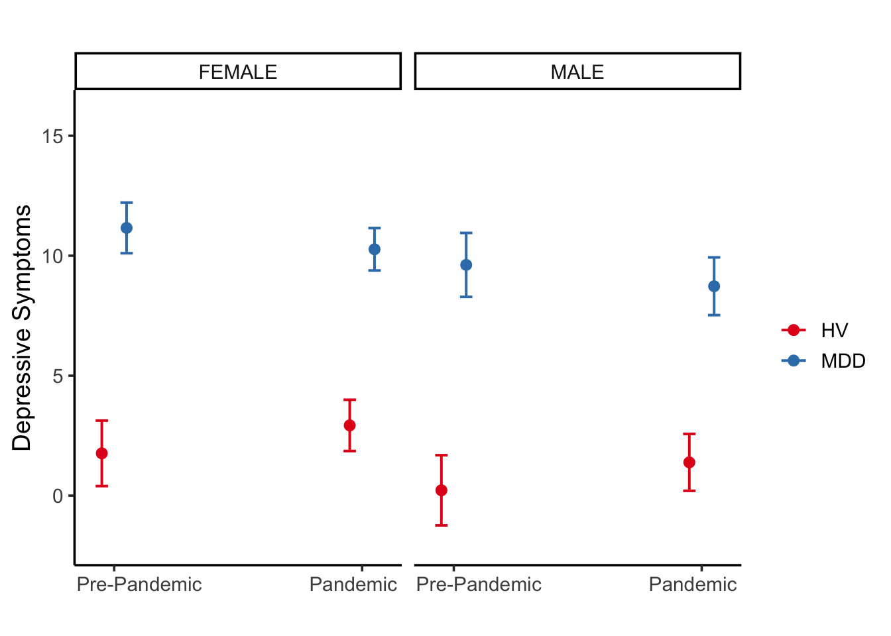
## # Predicted values of measureName
##
## # Group = HV
## # Gender = FEMALE
##
## Year | Predicted | 95% CI
## ---------------------------------------
## Pre-Pandemic | 1.76 | [0.40, 3.13]
## Pandemic | 2.93 | [1.86, 4.00]
##
## # Group = MDD
## # Gender = FEMALE
##
## Year | Predicted | 95% CI
## -----------------------------------------
## Pre-Pandemic | 11.16 | [10.10, 12.21]
## Pandemic | 10.27 | [ 9.38, 11.15]
##
## # Group = HV
## # Gender = MALE
##
## Year | Predicted | 95% CI
## ----------------------------------------
## Pre-Pandemic | 0.22 | [-1.24, 1.68]
## Pandemic | 1.39 | [ 0.20, 2.57]
##
## # Group = MDD
## # Gender = MALE
##
## Year | Predicted | 95% CI
## ----------------------------------------
## Pre-Pandemic | 9.62 | [8.28, 10.95]
## Pandemic | 8.73 | [7.52, 9.93]| Depressive Symptoms | |||
|---|---|---|---|
| Predictors | Estimates | CI | p |
| (Intercept) | 12.57 | 10.53 – 14.61 | <0.001 |
| Gender [MALE] | -2.50 | -5.09 – 0.08 | 0.058 |
| Time | -0.29 | -0.52 – -0.06 | 0.015 |
| Year [Pandemic] | -2.38 | -4.39 – -0.37 | 0.020 |
| Time * Year [Pandemic] | 0.38 | 0.08 – 0.67 | 0.012 |
| Random Effects | |||
| σ2 | 10.67 | ||
| τ00 Participant | 39.13 | ||
| τ11 Participant.Time | 0.45 | ||
| τ11 Participant.YearPandemic | 41.29 | ||
| τ11 Participant.Time:YearPandemic | 0.81 | ||
| ρ01 | -0.55 | ||
| -0.70 | |||
| 0.47 | |||
| ICC | 0.72 | ||
| N Participant | 59 | ||
| Observations | 889 | ||
| Marginal R2 / Conditional R2 | 0.042 / 0.731 | ||
## [1] "Slope of the trajectory during the pandemic (Time + Time * Year [Pandemic]"## Estimate Std. Error df t value lower upper Pr(>|t|)
## 1 0.0872 0.0851 53.7 1.02 -0.0835 0.258 0.31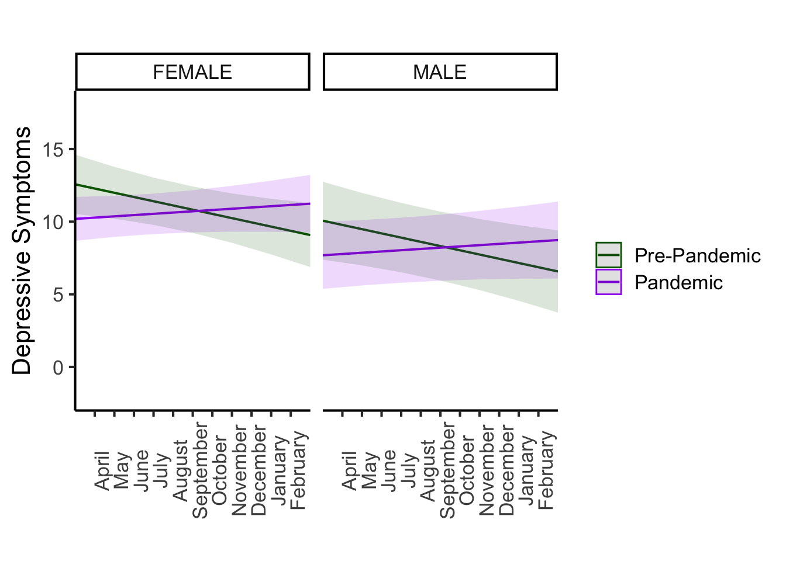
| Anxiety Symptoms | |||
|---|---|---|---|
| Predictors | Estimates | CI | p |
| (Intercept) | 0.76 | 0.25 – 1.26 | 0.003 |
| Gender [MALE] | -0.66 | -1.18 – -0.14 | 0.013 |
| Year [Pandemic] | 0.20 | -0.12 – 0.53 | 0.221 |
| Group [MDD] | 2.60 | 2.01 – 3.19 | <0.001 |
|
Year [Pandemic] * Group [MDD] |
-0.56 | -0.97 – -0.14 | 0.008 |
| Random Effects | |||
| σ2 | 0.78 | ||
| τ00 Participant | 3.08 | ||
| τ11 Participant.YearPandemic | 1.09 | ||
| ρ01 Participant | -0.43 | ||
| ICC | 0.78 | ||
| N Participant | 166 | ||
| Observations | 1800 | ||
| Marginal R2 / Conditional R2 | 0.268 / 0.838 | ||
## Scale for 'y' is already present. Adding another scale for 'y', which will
## replace the existing scale.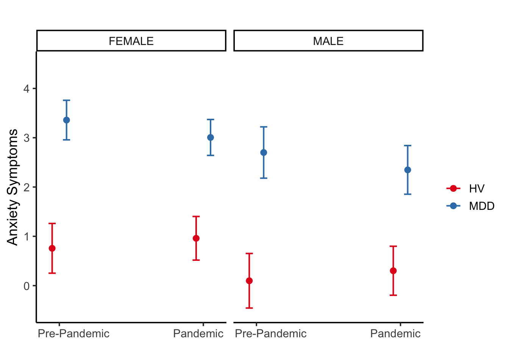
## # Predicted values of measureName
##
## # Group = HV
## # Gender = FEMALE
##
## Year | Predicted | 95% CI
## ---------------------------------------
## Pre-Pandemic | 1.76 | [0.40, 3.13]
## Pandemic | 2.93 | [1.86, 4.00]
##
## # Group = MDD
## # Gender = FEMALE
##
## Year | Predicted | 95% CI
## -----------------------------------------
## Pre-Pandemic | 11.16 | [10.10, 12.21]
## Pandemic | 10.27 | [ 9.38, 11.15]
##
## # Group = HV
## # Gender = MALE
##
## Year | Predicted | 95% CI
## ----------------------------------------
## Pre-Pandemic | 0.22 | [-1.24, 1.68]
## Pandemic | 1.39 | [ 0.20, 2.57]
##
## # Group = MDD
## # Gender = MALE
##
## Year | Predicted | 95% CI
## ----------------------------------------
## Pre-Pandemic | 9.62 | [8.28, 10.95]
## Pandemic | 8.73 | [7.52, 9.93]| Anxiety Symptoms | |||
|---|---|---|---|
| Predictors | Estimates | CI | p |
| (Intercept) | 3.37 | 2.67 – 4.07 | <0.001 |
| Gender [MALE] | -0.91 | -1.94 – 0.12 | 0.084 |
| Time | -0.06 | -0.11 – -0.00 | 0.048 |
| Year [Pandemic] | -0.43 | -1.05 – 0.19 | 0.171 |
| Time * Year [Pandemic] | 0.07 | -0.00 – 0.13 | 0.054 |
| Random Effects | |||
| σ2 | 0.87 | ||
| τ00 Participant | 5.07 | ||
| τ11 Participant.Time | 0.02 | ||
| τ11 Participant.YearPandemic | 4.36 | ||
| τ11 Participant.Time:YearPandemic | 0.03 | ||
| ρ01 | -0.43 | ||
| -0.63 | |||
| 0.47 | |||
| ICC | 0.82 | ||
| N Participant | 59 | ||
| Observations | 883 | ||
| Marginal R2 / Conditional R2 | 0.036 / 0.825 | ||
## [1] "Slope during the pandemic (Time + Time * Year [Pandemic])"## Estimate Std. Error df t value lower upper Pr(>|t|)
## 1 0.0105 0.0155 50.2 0.678 -0.0206 0.0415 0.501## Scale for 'y' is already present. Adding another scale for 'y', which will
## replace the existing scale.## Scale for 'x' is already present. Adding another scale for 'x', which will
## replace the existing scale.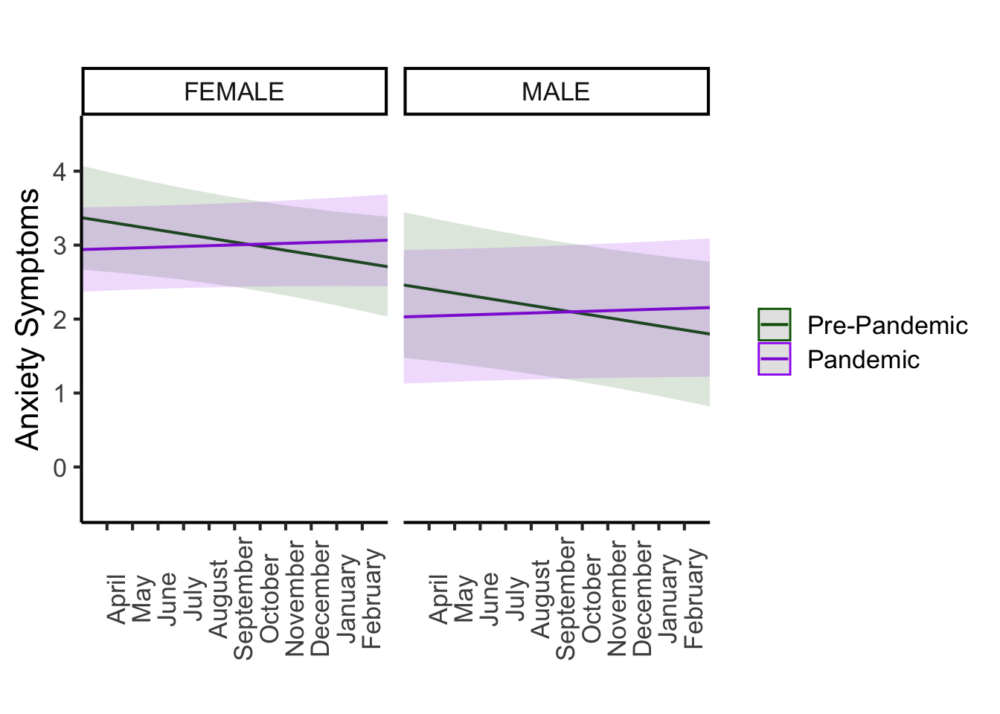
| Depressive Symptoms | Anxiety Symptoms | |||||
|---|---|---|---|---|---|---|
| Estimates | CI | p | Estimates | CI | p | |
| (Intercept) | 1.76 | 0.40 – 3.13 | 0.011 | 0.76 | 0.25 – 1.26 | 0.003 |
| Gender [MALE] | -1.54 | -2.80 – -0.28 | 0.016 | -0.66 | -1.18 – -0.14 | 0.013 |
| Year [Pandemic] | 1.16 | 0.10 – 2.23 | 0.032 | 0.20 | -0.12 – 0.53 | 0.221 |
| Group [MDD] | 9.40 | 7.78 – 11.01 | <0.001 | 2.60 | 2.01 – 3.19 | <0.001 |
|
Year [Pandemic] * Group [MDD] |
-2.05 | -3.40 – -0.71 | 0.003 | -0.56 | -0.97 – -0.14 | 0.008 |
| ICC | 0.59 | 0.78 | ||||
| N | 166 Participant | 166 Participant | ||||
| Observations | 1821 | 1800 | ||||
| Marginal R2 / Conditional R2 | 0.366 / 0.741 | 0.268 / 0.838 | ||||
| Depressive Symptoms | Anxiety Symptoms | |||||
|---|---|---|---|---|---|---|
| Estimates | CI | p | Estimates | CI | p | |
| (Intercept) | 12.57 | 10.53 – 14.61 | <0.001 | 3.37 | 2.67 – 4.07 | <0.001 |
| Gender [MALE] | -2.50 | -5.09 – 0.08 | 0.058 | -0.91 | -1.94 – 0.12 | 0.084 |
| Time | -0.29 | -0.52 – -0.06 | 0.015 | -0.06 | -0.11 – -0.00 | 0.048 |
| Year [Pandemic] | -2.38 | -4.39 – -0.37 | 0.020 | -0.43 | -1.05 – 0.19 | 0.171 |
| Time * Year [Pandemic] | 0.38 | 0.08 – 0.67 | 0.012 | 0.07 | -0.00 – 0.13 | 0.054 |
| ICC | 0.72 | 0.82 | ||||
| N | 59 Participant | 59 Participant | ||||
| Observations | 889 | 883 | ||||
| Marginal R2 / Conditional R2 | 0.042 / 0.731 | 0.036 / 0.825 | ||||
| Worry | Family Relationship | |||||
|---|---|---|---|---|---|---|
| Estimates | CI | p | Estimates | CI | p | |
| (Intercept) | 6.51 | 5.70 – 7.32 | <0.001 | 1.88 | 1.72 – 2.04 | <0.001 |
| Gender [MALE] | -0.86 | -1.77 – 0.05 | 0.064 | -0.07 | -0.24 – 0.10 | 0.435 |
| Group [MDD] | 1.54 | 0.56 – 2.51 | 0.002 | 0.30 | 0.10 – 0.49 | 0.003 |
| Time | -0.03 | -0.11 – 0.04 | 0.398 | 0.00 | -0.02 – 0.02 | 0.865 |
| Group [MDD] * Time | 0.00 | -0.10 – 0.10 | 0.984 | -0.02 | -0.04 – 0.01 | 0.247 |
| ICC | 0.62 | 0.47 | ||||
| N | 162 Participant | 162 Participant | ||||
| Observations | 905 | 905 | ||||
| Marginal R2 / Conditional R2 | 0.073 / 0.648 | 0.034 / 0.490 | ||||
| Time spent playing video Games | Time Spent watching TV | Time spent on social media | |||||||
|---|---|---|---|---|---|---|---|---|---|
| Estimates | CI | p | Estimates | CI | p | Estimates | CI | p | |
| (Intercept) | 0.68 | 0.39 – 0.97 | <0.001 | 2.32 | 2.12 – 2.52 | <0.001 | 2.21 | 1.95 – 2.48 | <0.001 |
| Gender [MALE] | 1.28 | 0.95 – 1.61 | <0.001 | 0.05 | -0.16 – 0.26 | 0.635 | -0.49 | -0.78 – -0.20 | 0.001 |
| Group [MDD] | 0.67 | 0.32 – 1.02 | <0.001 | 0.25 | 0.01 – 0.49 | 0.045 | -0.04 | -0.36 – 0.28 | 0.812 |
| Time | -0.01 | -0.04 – 0.01 | 0.329 | -0.04 | -0.06 – -0.01 | 0.001 | -0.01 | -0.03 – 0.01 | 0.403 |
| Group [MDD] * Time | -0.02 | -0.05 – 0.01 | 0.244 | 0.03 | 0.00 – 0.06 | 0.048 | 0.00 | -0.03 – 0.04 | 0.767 |
| ICC | 0.71 | 0.49 | 0.72 | ||||||
| N | 162 Participant | 162 Participant | 162 Participant | ||||||
| Observations | 905 | 905 | 905 | ||||||
| Marginal R2 / Conditional R2 | 0.234 / 0.777 | 0.057 / 0.516 | 0.050 / 0.739 | ||||||
| Friend Relationship | Exercise | Time Spent outdoors | Sleep < 6 hours | Sleep > 10 hours | |||||||||||
|---|---|---|---|---|---|---|---|---|---|---|---|---|---|---|---|
| Estimates | CI | p | Estimates | CI | p | Estimates | CI | p | Odds Ratios | CI | p | Odds Ratios | CI | p | |
| (Intercept) | 2.17 | 2.00 – 2.34 | <0.001 | 2.16 | 1.83 – 2.49 | <0.001 | 2.49 | 2.16 – 2.82 | <0.001 | 0.01 | 0.00 – 0.05 | <0.001 | 0.00 | 0.00 – 0.06 | <0.001 |
| Gender [MALE] | -0.03 | -0.21 – 0.14 | 0.703 | 0.43 | 0.08 – 0.79 | 0.015 | 0.26 | -0.08 – 0.59 | 0.129 | 0.43 | 0.13 – 1.46 | 0.175 | 0.75 | 0.05 – 11.23 | 0.834 |
| Group [MDD] | 0.25 | 0.04 – 0.46 | 0.018 | -0.48 | -0.88 – -0.08 | 0.019 | -0.41 | -0.81 – -0.01 | 0.046 | 5.79 | 1.42 – 23.59 | 0.014 | 0.12 | 0.00 – 3.77 | 0.229 |
| Time | 0.01 | -0.02 – 0.03 | 0.489 | -0.04 | -0.08 – -0.01 | 0.013 | -0.03 | -0.06 – 0.00 | 0.058 | 0.99 | 0.84 – 1.15 | 0.858 | 0.20 | 0.04 – 1.00 | 0.049 |
| Group [MDD] * Time | -0.01 | -0.04 – 0.02 | 0.505 | 0.02 | -0.02 – 0.07 | 0.356 | -0.01 | -0.05 – 0.03 | 0.586 | 1.03 | 0.86 – 1.24 | 0.726 | 4.95 | 1.00 – 24.58 | 0.051 |
| ICC | 0.50 | 0.62 | 0.60 | 0.67 | 0.95 | ||||||||||
| N | 162 Participant | 162 Participant | 162 Participant | 162 Participant | 162 Participant | ||||||||||
| Observations | 905 | 905 | 905 | 905 | 905 | ||||||||||
| Marginal R2 / Conditional R2 | 0.022 / 0.512 | 0.058 / 0.639 | 0.053 / 0.619 | 0.105 / 0.703 | 0.222 / 0.958 | ||||||||||
| Depressive Symptoms | Anxiety Symptoms | |||||
|---|---|---|---|---|---|---|
| Estimates | CI | p | Estimates | CI | p | |
| (Intercept) | 1.74 | 0.46 – 3.03 | 0.008 | 0.75 | 0.26 – 1.24 | 0.003 |
| Gender [MALE] | -1.51 | -2.67 – -0.35 | 0.011 | -0.65 | -1.15 – -0.14 | 0.012 |
| Year [Pandemic] | 1.17 | 0.10 – 2.24 | 0.032 | 0.20 | -0.12 – 0.53 | 0.223 |
| Group [ongoingMDD] | 12.21 | 10.35 – 14.07 | <0.001 | 3.37 | 2.66 – 4.08 | <0.001 |
| Group [RestOfMDD] | 7.35 | 5.63 – 9.06 | <0.001 | 2.04 | 1.40 – 2.69 | <0.001 |
|
Year [Pandemic] * Group [ongoingMDD] |
-2.61 | -4.26 – -0.97 | 0.002 | -0.65 | -1.16 – -0.14 | 0.013 |
|
Year [Pandemic] * Group [RestOfMDD] |
-1.68 | -3.19 – -0.16 | 0.030 | -0.49 | -0.96 – -0.03 | 0.038 |
| ICC | 0.55 | 0.77 | ||||
| N | 166 Participant | 166 Participant | ||||
| Observations | 1821 | 1800 | ||||
| Marginal R2 / Conditional R2 | 0.435 / 0.747 | 0.319 / 0.840 | ||||
## [1] "----Contrast for comparing Ongoing MDD vs. Rest of MDD interaction terms for Depressive Symptoms "## Estimate Std. Error df t value lower upper Pr(>|t|)
## 1 -0.936 0.842 160 -1.11 -2.6 0.726 0.267## [1] "----Contrast for comparing Ongoing MDD vs. Rest of MDD interaction terms for Anxiety Symptoms "## Estimate Std. Error df t value lower upper Pr(>|t|)
## 1 -0.153 0.263 162 -0.581 -0.673 0.367 0.562#how many CBT before and during COVID
## [1] "Total number of participants that participated in CBT during March 2019-March 2021 - some participated in both inpatient and outpatient: 32"## [1] "Total number of participants that participated in CBT prior to the start of the pandemic: 27"## [1] "Total number of participants that continued CBT or started CBT after the pandemic: 8"| Depressive Symptoms | Anxiety Symptoms | |||||
|---|---|---|---|---|---|---|
| Estimates | CI | p | Estimates | CI | p | |
| (Intercept) | 1.78 | 0.52 – 3.04 | 0.006 | 0.71 | 0.26 – 1.16 | 0.002 |
| Gender [MALE] | -1.56 | -2.89 – -0.24 | 0.021 | -0.55 | -1.06 – -0.03 | 0.038 |
| Year [Pandemic] | 1.16 | 0.29 – 2.02 | 0.009 | 0.20 | -0.07 – 0.48 | 0.141 |
| Group [MDD] | 8.81 | 7.19 – 10.43 | <0.001 | 2.36 | 1.80 – 2.93 | <0.001 |
|
Year [Pandemic] * Group [MDD] |
-2.33 | -3.54 – -1.11 | <0.001 | -0.60 | -0.98 – -0.22 | 0.002 |
| ICC | 0.66 | 0.81 | ||||
| N | 134 Participant | 134 Participant | ||||
| Observations | 1199 | 1187 | ||||
| Marginal R2 / Conditional R2 | 0.392 / 0.792 | 0.279 / 0.864 | ||||
## Scale for 'y' is already present. Adding another scale for 'y', which will
## replace the existing scale.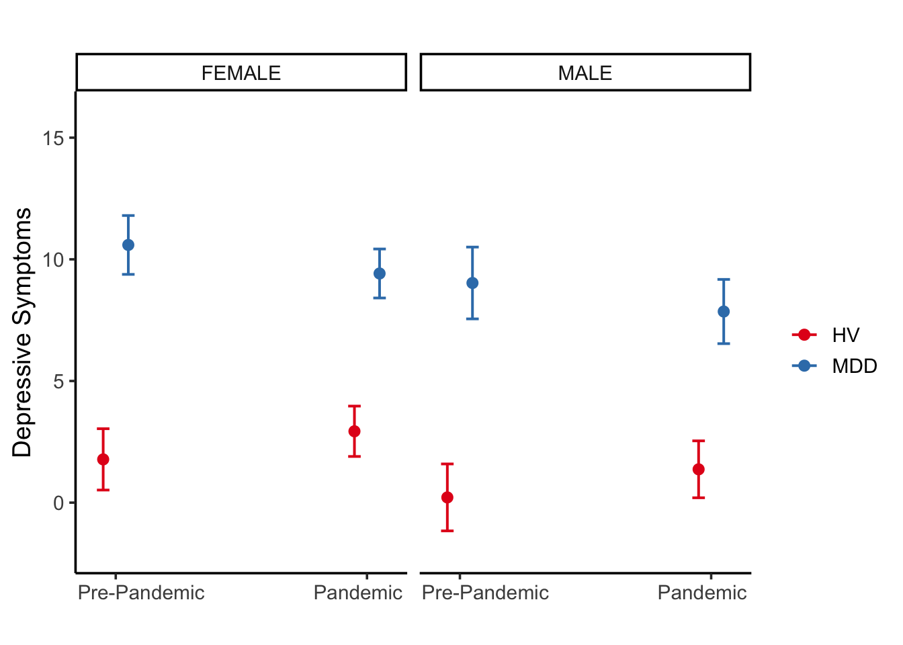
## Scale for 'y' is already present. Adding another scale for 'y', which will
## replace the existing scale.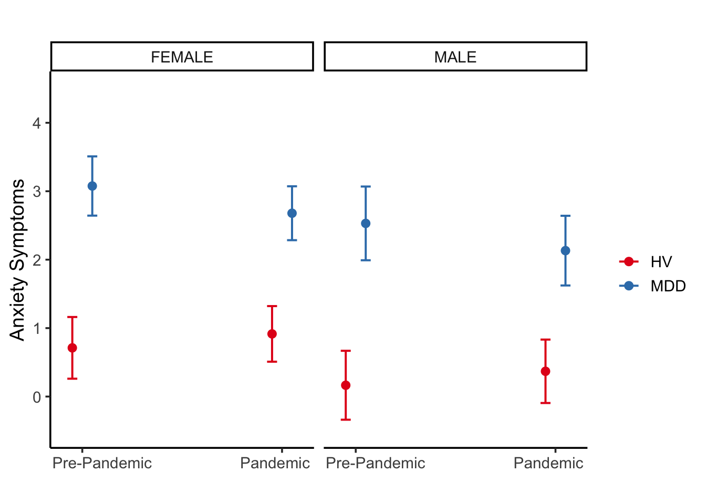
| Depressive Symptoms | |||
|---|---|---|---|
| Predictors | Estimates | CI | p |
| (Intercept) | 10.96 | 8.75 – 13.18 | <0.001 |
| Gender [MALE] | -3.91 | -7.30 – -0.51 | 0.024 |
| Time | -0.06 | -0.30 – 0.19 | 0.643 |
| Year [Pandemic] | -1.38 | -3.44 – 0.67 | 0.187 |
| Time * Year [Pandemic] | 0.08 | -0.24 – 0.40 | 0.617 |
| Random Effects | |||
| σ2 | 8.41 | ||
| τ00 Participant | 22.37 | ||
| τ11 Participant.Time | 0.15 | ||
| τ11 Participant.YearPandemic | 19.47 | ||
| τ11 Participant.Time:YearPandemic | 0.38 | ||
| ρ01 | -0.03 | ||
| -0.55 | |||
| 0.38 | |||
| ICC | 0.73 | ||
| N Participant | 33 | ||
| Observations | 361 | ||
| Marginal R2 / Conditional R2 | 0.081 / 0.753 | ||
## [1] "Slope during the pandemic: Time + Time * Year [Pandemic]: "## Estimate Std. Error df t value lower upper Pr(>|t|)
## 1 0.0225 0.103 32.6 0.219 -0.187 0.232 0.828## Scale for 'y' is already present. Adding another scale for 'y', which will
## replace the existing scale.## Scale for 'x' is already present. Adding another scale for 'x', which will
## replace the existing scale.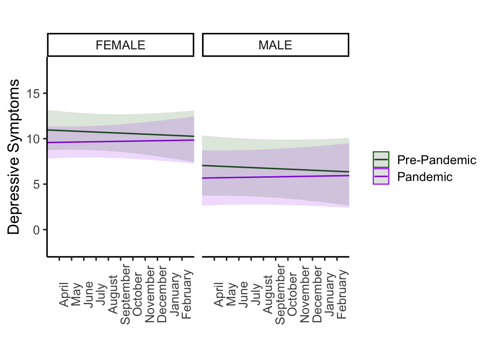
| Anxiety Symptoms | |||
|---|---|---|---|
| Predictors | Estimates | CI | p |
| (Intercept) | 2.97 | 2.08 – 3.85 | <0.001 |
| Gender [MALE] | -0.77 | -2.22 – 0.68 | 0.301 |
| Time | -0.01 | -0.08 – 0.06 | 0.683 |
| Year [Pandemic] | -0.27 | -0.90 – 0.37 | 0.411 |
| Time * Year [Pandemic] | 0.02 | -0.06 – 0.10 | 0.557 |
| Random Effects | |||
| σ2 | 0.81 | ||
| τ00 Participant | 4.37 | ||
| τ11 Participant.Time | 0.01 | ||
| τ11 Participant.YearPandemic | 1.96 | ||
| τ11 Participant.Time:YearPandemic | 0.01 | ||
| ρ01 | -0.22 | ||
| -0.49 | |||
| 0.17 | |||
| ICC | 0.82 | ||
| N Participant | 33 | ||
| Observations | 362 | ||
| Marginal R2 / Conditional R2 | 0.023 / 0.820 | ||
## [1] "Slope during the pandemic (Time + Time * Year [Pandemic]) "## Estimate Std. Error df t value lower upper Pr(>|t|)
## 1 0.00923 0.0206 26.8 0.448 -0.033 0.0515 0.657## Scale for 'y' is already present. Adding another scale for 'y', which will
## replace the existing scale.## Scale for 'x' is already present. Adding another scale for 'x', which will
## replace the existing scale.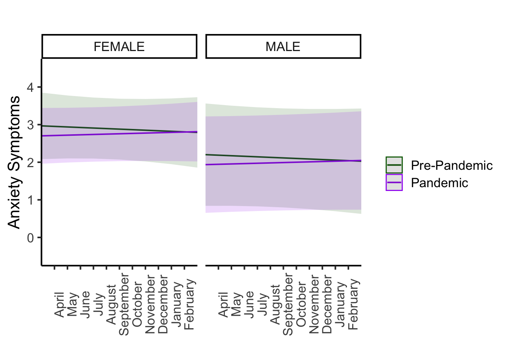
| Depressive Symptoms | Anxiety Symptoms | |||||
|---|---|---|---|---|---|---|
| Estimates | CI | p | Estimates | CI | p | |
| (Intercept) | 10.96 | 8.75 – 13.18 | <0.001 | 2.97 | 2.08 – 3.85 | <0.001 |
| Gender [MALE] | -3.91 | -7.30 – -0.51 | 0.024 | -0.77 | -2.22 – 0.68 | 0.301 |
| Time | -0.06 | -0.30 – 0.19 | 0.643 | -0.01 | -0.08 – 0.06 | 0.683 |
| Year [Pandemic] | -1.38 | -3.44 – 0.67 | 0.187 | -0.27 | -0.90 – 0.37 | 0.411 |
| Time * Year [Pandemic] | 0.08 | -0.24 – 0.40 | 0.617 | 0.02 | -0.06 – 0.10 | 0.557 |
| ICC | 0.73 | 0.82 | ||||
| N | 33 Participant | 33 Participant | ||||
| Observations | 361 | 362 | ||||
| Marginal R2 / Conditional R2 | 0.081 / 0.753 | 0.023 / 0.820 | ||||
## [1] "----Summary of MFQs for HVs, Pre-Pandemic"## Min. 1st Qu. Median Mean 3rd Qu. Max.
## 1.000 1.000 1.000 1.214 1.000 3.000## [1] "----Summary of MFQs for HVs, During Pandemic"## Min. 1st Qu. Median Mean 3rd Qu. Max.
## 1.000 5.000 9.000 7.857 10.000 13.000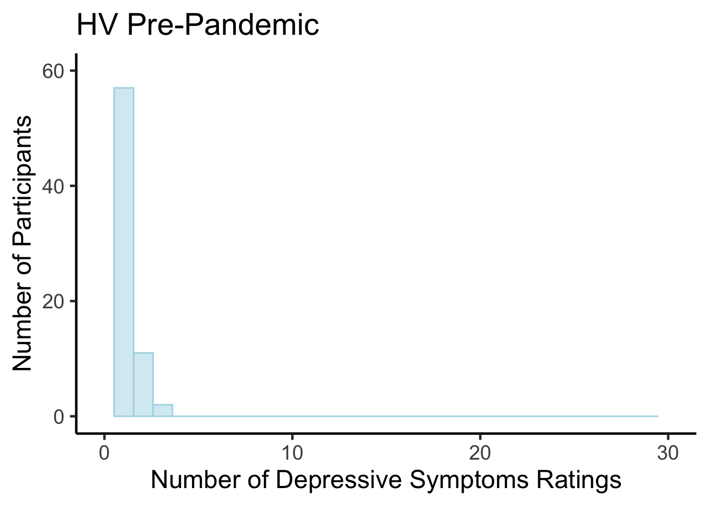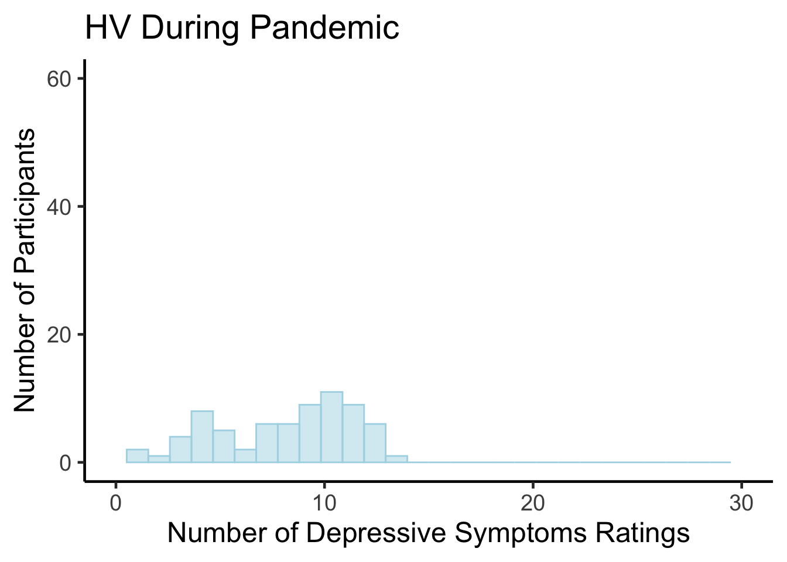
## [1] "----Summary of MFQs for MDD Group, Pre-Pandemic"## Min. 1st Qu. Median Mean 3rd Qu. Max.
## 1.000 1.000 2.000 4.521 5.000 26.000## [1] "----Summary of MFQs for MDD Group, During Pandemic"## Min. 1st Qu. Median Mean 3rd Qu. Max.
## 1.000 4.000 7.000 7.833 11.000 29.000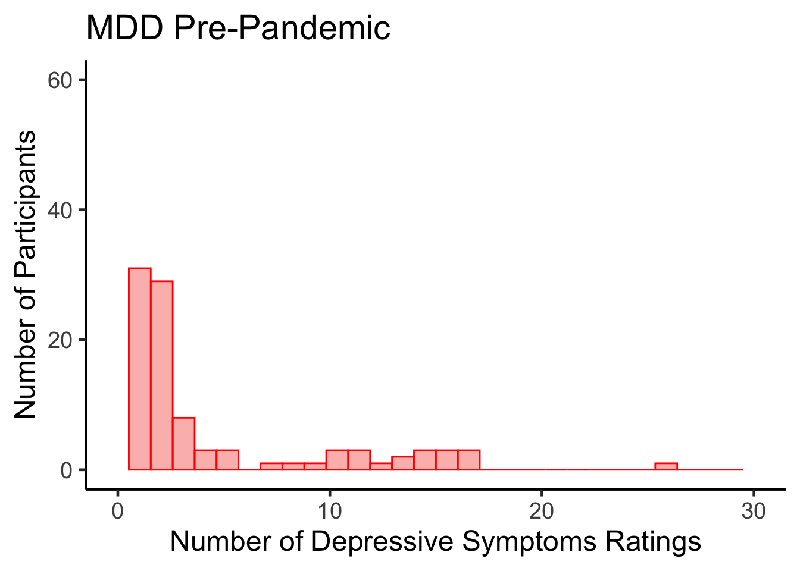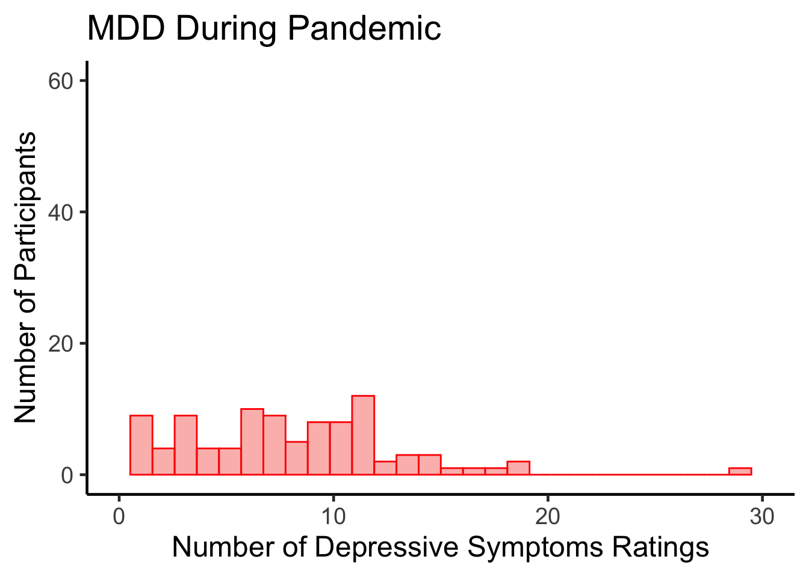
## [1] "----Summary of CRISIS for HVs"## Min. 1st Qu. Median Mean 3rd Qu. Max.
## 1.000 3.000 7.000 5.467 8.000 8.000## [1] "----Summary of CRISIS for HVs"## Min. 1st Qu. Median Mean 3rd Qu. Max.
## 1.000 2.000 5.000 4.643 7.000 8.000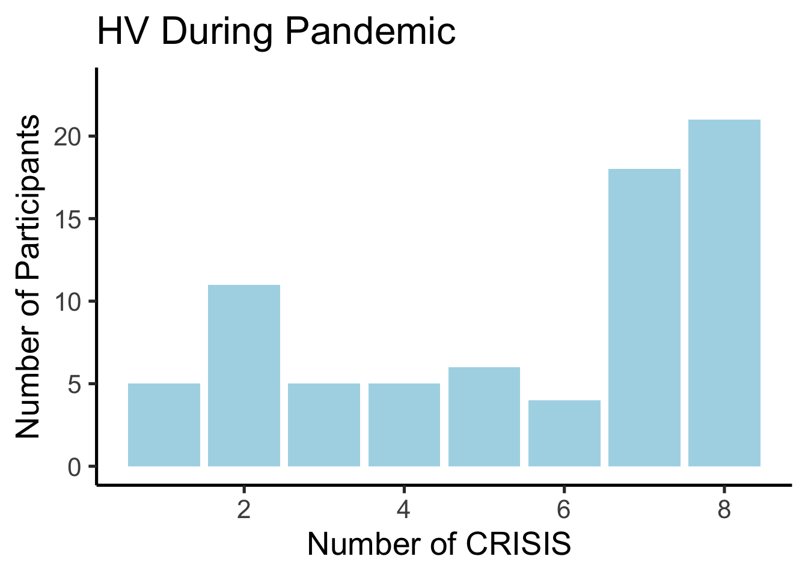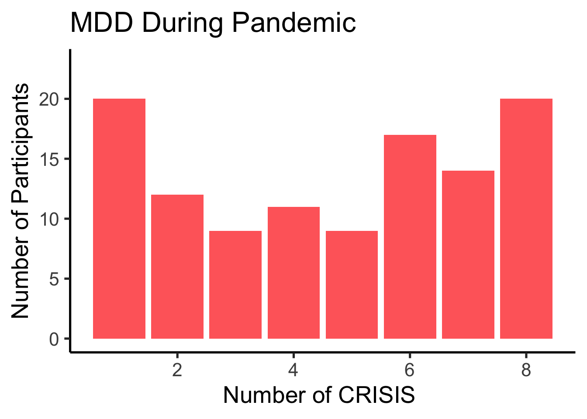